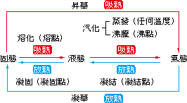
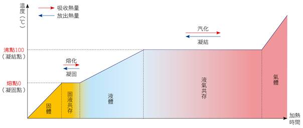
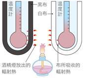

第 5 章 溫度與熱
5-1 溫度與溫度計
焦點一：溫度的定義、溫度計製作原理與溫標
1. 溫度計
(1) 溫度：描述物體冷熱程度的物理量。
(2) 測量溫度的工具為溫度計，是利用物質 熱脹冷縮 的特性製作而成。
(3) 常見溫度計：
a. 酒精溫度計：具有低凝固點的特性，測量範圍為 −115℃ ～ 78℃。
b. 水銀溫度計：脹縮均勻，準確度高，測量範圍較廣（−39℃ ～ 357℃）；具有高沸點特性。
2. 溫標的制定
(1) 華氏溫標（℉）：歷史上第一個溫標。
(2) 攝氏溫標（℃）：在1大氣壓下，將水的凝固點定為 0℃，沸點定為 100℃，中間平均劃分出 100 個等分，每一等分為 1℃。
(3) 攝氏與華氏溫標兩者之間可以互相換算：
💡 換算公式：$\text{℉} = \frac{9}{5} \times \text{℃} + 32$，或 $\text{℃} = \frac{5}{9} \times (\text{℉} - 32)$
5-1 隨堂實戰評量
溫度計製作原理、熱脹冷縮與溫標
(A) 大於 12.3 cm
(B) 小於 12.3 cm
(C) 等於 12.3 cm
(D) 不一定
【解析】直尺在冬天校準，夏天時因熱脹冷縮，直尺本身略有膨脹，每一刻度間距比冬天略大，所以用這支直尺量原子筆，讀數偏小。實際長度 > 12.3 cm，答案為 (A)。
(A) 可在水中滴入紅墨水以方便觀察
(B) 此實驗是利用體積熱脹冷縮的原理
(C) 作溫度計使用時，甲測量的結果較準確
(D) 將甲瓶放入 100℃ 沸水後，液面高度也會是 12 cm
【解析】(A)(B)(C) 均正確。(D) 錯誤：甲管較細，相同體積膨脹量在細管中液面上升幅度更大（比乙管 12 cm 還高），不可能也剛好是 12 cm。
5-2 熱量
焦點二：熱量定義、單位、熱量流動與熱平衡
1. 熱量的定義與關係式
(1) 物體溫度的上升是由於熱源提供了 熱量，對穩定熱源而言，加熱物體的時間愈長，傳遞到物體的熱量愈多，即提供的熱量與加熱時間成 正比。
(2) 關係式：熱量 ∝（水的質量）×（溫度變化量）
$H \propto m \times \Delta T = m \times (T_2 - T_1)$
2. 熱量的單位
a. 卡（cal）：使 1公克 的水，溫度上升 1℃ 所需的熱量，稱為 1 卡（cal）。
b. 1000 卡可以表示為 1 千卡（kcal），千卡又稱為 大卡。
3. 熱量的流動與熱平衡
(1) 不同溫度的物體在接觸後，熱量會自 高 溫處流向 低 溫處。
(2) 最後兩物體溫度會相同，且不再改變，即達到 熱平衡 狀態。
💡 觀念精粹：「溫度」描述冷熱程度，「熱量」描述能量轉移的多少。熱量流動方向：高溫 → 低溫（與溫差有關，與質量、比熱等因素無關）。
▲ 穩定熱源加熱：水量固定→加熱時間愈長，溫度上升愈多；水量愈多→達到相同升溫所需時間愈長。
5-2 隨堂實戰評量
熱量關係式、熱量單位與熱平衡
(A) m₁：m₂ ＝ ΔT₁：ΔT₂
(B) m₁ × ΔT₁ ＝ m₂ × ΔT₂
(C) m₁ × m₂ ＝ ΔT₁ × ΔT₂
(D) m₁：ΔT₁ ＝ m₂：ΔT₂
【解析】穩定熱源、相同時間→兩杯水吸收的熱量相同（H₁ = H₂），由 H ∝ m × ΔT，得 m₁ × ΔT₁ = m₂ × ΔT₂，答案為 (B)。
(A) 具有 10 卡的熱量
(B) 溫度上升至 2℃，必須吸收 10 卡的熱量
(C) 比質量 10 g、溫度 3℃ 的水少含 20 卡的熱量
(D) 溫度下降至 0.5℃ 必須放出 5 卡的熱量
【解析】(A) 錯誤：「熱量」是在傳遞過程中才有意義，物體本身不能說「具有」多少卡的熱量（應說內能）。(B)(C)(D) 皆正確（以 H = m × ΔT 計算）。
(A) 10 g 的水
(B) 40 g 的水
(C) 70 g 的水
(D) 三杯水皆相同
【解析】穩定熱源、相同時間→各杯吸收熱量相同（H 相同）。由 ΔT = H / m 得知，質量最小的 10 g 那杯溫度上升最多，最終溫度最高。答案為 (A)。
(A) 質量大的傳向質量小的
(B) 溫度高的傳向溫度低的
(C) 體積大的傳向體積小的
(D) 密度大的傳向密度小的
【解析】熱量流動的方向由溫度高低決定，永遠從高溫流向低溫，與質量、體積、密度無關。答案為 (B)。
5-3 比熱
焦點三：比熱定義、比熱表與 H = m × S × ΔT 公式
1. 比熱的定義與單位
(1) 定義：使 1 公克的物質上升 1℃ 要吸收的熱量，稱為該物質的比熱。
(2) 單位：卡 / 公克．℃（cal/g．℃）。
(3) 比熱可以代表物質的特性，相同狀態下，同一種純物質會有相同的比熱。
| 物質 | 銅 | 鐵 | 鋁 | 冰 | 酒精 | 甘油 | 水 |
| 比熱（cal/g．℃） |
0.093 | 0.113 | 0.217 | 0.55 | 0.57 | 0.58 | 1.0 |
2. 比熱的意義
(a) 物質比熱 大 者，溫度不易升降，故難冷難熱（如水，海邊氣溫較穩定的原因）。
(b) 物質比熱 小 者，溫度容易升降，故易冷易熱（如銅、鐵等金屬）。
(c) 對同質量比熱不同的物質，由 T₁℃ 升至 T₂℃ 時，比熱較大者吸收熱量較多；由 T₂℃ 降至 T₁℃ 時，比熱較大者放熱亦較多。
3. 熱量與比熱的關係（H = m × S × ΔT）
$H = m \times S \times \Delta T = m \times S \times (T_2 - T_1)$
H
熱量（cal）
m
質量（g）
S
比熱（cal/g．℃）
ΔT
溫度變化（℃）
5-3 隨堂實戰評量
比熱公式 H = mSΔT 應用與比熱大小比較
(A) 2：1
(B) 1：1
(C) 1：2
(D) 1：3
【解析】由 H = mSΔT，m 與 H 相同，∴ ΔT ∝ 1/S。比熱比 S甲：S乙 = 2：1，故 ΔT甲：ΔT乙 = 1/2：1/1 = 1：2，答案為 (C)。
(A) 10℃
(B) 20℃
(C) 30℃
(D) 40℃
【解析】穩定熱源、相同時間→吸熱相同。水吸熱：H = 100 × 1.0 × (85−25) = 6000 cal。某液體：6000 = 600 × 0.5 × ΔT，∴ ΔT = 6000/300 = 20℃，答案為 (B)。
(A) 0.63 cal/g．℃
(B) 0.80 cal/g．℃
(C) 1.24 cal/g．℃
(D) 1.60 cal/g．℃
【解析】由圖，相同時間內水升溫約 8℃，某液體升溫約 12.7℃。因 H 相同，m 相同，∴ S × ΔT = 常數。S液 × 12.7 = 1.0 × 8，∴ S液 ≈ 0.63 cal/g．℃，答案為 (A)。
(A) 鐵塊的溫度較高
(B) 鐵塊含熱較多
(C) 鐵塊的質量較大
(D) 鐵塊的比熱較大
【解析】熱的流向由溫度決定：鐵塊溫度 100℃ > 銅塊 30℃，故熱從鐵流向銅，與質量、比熱、熱量多少無關。答案為 (A)。
5-4 熱對物質的影響（一）
焦點四：熱脹冷縮、水的異常膨脹與生活應用
1. 熱對物質體積的影響
(1) 大部分的物質具有 熱脹冷縮 的性質，而物質體積隨溫度改變的情形，以氣體最為明顯、液體次之、固體最不明顯。
(2) 生活應用：凹陷的乒乓球放入熱水使其恢復原狀；鐵軌銜接處的空隙、水泥橋面設計的伸縮縫等。
2. 水的異常膨脹（例外！）
(1) 少數物質在某些狀況有例外，水在 4°C 時，密度最 大，體積最 小。
a. 4°C ～ 100°C：水隨溫度愈高，體積愈大，密度愈小（正常熱脹冷縮）。
b. 0°C ～ 4°C：水隨溫度愈低，體積愈大，密度愈小（反常：熱縮冷脹）。
💡 應用：水在 4°C 密度最大，湖泊底部在冬天接近 4°C，湖面才有結冰保護水中生物；同理，水管爆裂、瓶中水結冰膨脹撐破，均是此異常膨脹所致。
▼ 水的密度 vs 溫度關係示意
0℃
體積↑
密度↓
（結冰）
0→4℃
體積↓
密度↑
4℃
體積最小
密度最大
4→100℃
體積↑
密度↓
5-4 熱對物質的影響（二）
焦點五：三態變化、熔化沸騰過程與溫度時間圖
1. 熱對物質狀態的影響
(1) 物質由固態 → 液態 → 氣態的過程，需 吸收 熱量。
(2) 物質由氣態 → 液態 → 固態的過程，需 放出 熱量。

▲ 三態變化（固、液、氣）吸放熱方向圖
2. 三態變化溫度時間圖（以水加熱為例）
a. 冰熔化期間（熔點 0℃）：冰和水共存，繼續加熱溫度仍維持 0 ℃，吸收的熱量全用來改變狀態（熔化熱）。
b. 水沸騰期間（沸點 100℃）：水和水蒸氣共存，繼續加熱溫度仍維持 100 ℃，吸收的熱量全用來改變狀態（汽化熱）。
c. 蒸發 vs. 沸騰：蒸發可在任何溫度下進行（液面），沸騰須在沸點且液體內部急劇汽化。兩者都是液態→氣態（汽化）。

▲ 水加熱的溫度與時間關係
💡 溫度不變的三態共存期間：固液共存（熔點）、液氣共存（沸點）——持續加熱但溫度不升，熱量全用於改變物質狀態（而非升溫）。
5-4 隨堂實戰評量（一）
熱脹冷縮狀態、水的異常與三態變化
(A) 與物質狀態無關
(B) 液態物質
(C) 氣態物質
(D) 固態物質
【解析】體積隨溫度變化最明顯的是氣體，其次是液體，固體最不明顯。答案為 (C)。
(A) 0 ～ t₁
(B) t₁ ～ t₂
(C) t₂ ～ t₃
(D) t₃ ～ t₄
【解析】從圖可看出：t₁之前冰塊升溫（固態）；t₁～t₂ 溫度維持在 0℃ 不變（冰熔化，固液共存）；t₂ 之後全液態繼續升溫。答案為 (B)。
(A) 兩者都是液體汽化的過程
(B) 蒸發必須在特定的溫度下進行，沸騰則在任何溫度下皆可以進行
(C) 蒸發過程需要吸熱，沸騰過程需要放熱
(D) 沸騰是液體表面的汽化，蒸發是液體內部急劇汽化
【解析】(A) 正確：蒸發和沸騰都是液態→氣態（汽化），都吸熱。(B) 錯誤：蒸發任意溫度皆可，沸騰需在沸點。(C) 錯誤：兩者都吸熱。(D) 錯誤：相反，蒸發是液面，沸騰是液體內部急劇汽化。
(A) 增加美觀
(B) 增加輸油速率
(C) 避免油管脹縮而破裂
(D) 增加油的壓力
【解析】金屬管受溫度變化會熱脹冷縮，若無彈性設計，固定管道因熱脹產生的應力會導致管道破裂。U 字彎管提供伸縮緩衝空間。答案為 (C)。
5-4 隨堂實戰評量（二）
水的異常膨脹與溫度計應用（多選題）
(1) 阿吉測量湖泊表面的水溫，夏天為 20℃、冬天為 1℃，則下列對於湖泊底部與表面水溫的比較，何者正確？答：
C。
(A) 夏天、冬天的湖底水溫均較湖面低
(B) 夏天、冬天的湖底水溫均較湖面高
(C) 夏天的湖底水溫低於 20℃，而冬天則高於 1℃
(D) 夏天的湖底水溫高於 20℃，而冬天則低於 1℃
【解析】水在 4℃ 密度最大。夏天水面 20℃，湖底密度最大的水為 4℃，低於 20℃（C前半正確）；冬天水面 1℃，湖底接近 4℃，高於 1℃（C後半正確）。答 (C)。
(2) 在 0℃ ～ 100℃ 之間，為何水不適合作為溫度計中的測量液體？答：
D。
(A) 水有對流現象
(B) 水的熱脹冷縮效應不大
(C) 水在 4℃ 以上不滿足熱脹冷縮性質
(D) 水的體積與溫度不是全為正比關係
【解析】溫度計需要體積與溫度呈線性（正比）關係，才能均勻刻度。水在 0℃～4℃ 反常（降溫體積反而增大），不是全程線性關係，故不適合作測量液。答 (D)。
💡 本題重點：水的異常膨脹（0℃～4℃ 降溫膨脹）導致：(1) 湖底冬天保持在 4℃ 左右，保護水中生物；(2) 水的體積與溫度不是線性關係，不能作溫度計的測量液。
5-5 熱的傳播方式（一）
焦點六：傳導與對流的定義、特性與實例
1. 熱傳播方式總覽
| 方式 | 定義 | 特性 | 實例 |
|---|
| 傳導 |
透過 接觸，將熱在物體間傳遞的方式。 |
不同物質傳導能力不同，分為熱的良導體（金屬）與熱的不良導體（木材、塑膠、空氣）。 |
炒菜鍋、熱水壺等用金屬（傳導效果佳）；握柄用塑膠或木材（傳導效果較差）隔熱。 |
| 對流 |
在液體或氣體內，經由物質的 流動 來傳送熱的方式。 |
液體/氣體受熱膨脹密度變小上浮，冷卻收縮密度變大下沉，形成對流循環。 |
(1) 冷氣裝 高處，電暖器設 地面。
(2) 加熱壺底使整壺水沸騰。 |
💡 傳導 vs. 對流：傳導需要物體「接觸」，本身不流動；對流必須是液體或氣體（流體），靠密度差驅動流動。固體只能傳導，不能對流。
5-5 熱的傳播方式（二）
焦點七：輻射的定義、特性與顏色/表面影響
2. 輻射（Radiation）
| 方式 | 定義 | 特性 | 實例 |
|---|
| 輻射 |
不需經由 介質，即可將熱直接傳送到四周的方式。 |
(1) 溫度愈高，輻射能力愈強。
(2) 顏色深、表面粗糙的物體較容易吸收與發出輻射；顏色淺、表面光滑的則相反。 |
(1) 太陽能熱水器集熱板多為 深 色，吸收輻射熱。
(2) 儲油槽表面漆 淺 色，避免溫度過高。 |

▲ 輻射：無需介質，穿越真空傳熱（太陽→地球）
💡
三種傳播方式比較：
| 傳播方式 | 是否需要介質 | 適用物質 | 代表例子 |
|---|
| 傳導 | 需要（固體最佳） | 固 > 液 > 氣 | 鍋把、鐵棒加熱 |
| 對流 | 需要（流體） | 液體、氣體 | 冷氣、煮水、大氣環流 |
| 輻射 | 不需要 | 任何（含真空） | 太陽輻射、火爐旁取暖 |
5-5 隨堂實戰評量（一）
傳導、對流、輻射的辨別與應用（第 1～4 題）
(A) 空氣、對流
(B) 鍋子、傳導
(C) 空氣、傳導
(D) 鍋子、對流
【解析】熱湯→鍋子（傳導）→手（傳導），靠物體直接接觸傳熱。答案為 (B)。
(A) 黑色衣服
(B) 白色衣服
(C) 綠色衣服
(D) 藍色衣服
【解析】顏色深（黑色）的衣服較容易「發出」輻射熱（散熱快），顏色淺（白色）較不易發出輻射熱（保溫）。為避免散熱，應穿白色。答案為 (B)。
(A) 一樣快
(B) 甲快
(C) 乙快
(D) 不一定
【解析】左試管加熱底部，底部水受熱上浮，形成對流，整管水均勻升溫，甲（底部）溫度上升較慢。右試管加熱頸部（上方），熱水留在上方不對流，乙處溫度迅速升高。故乙快。答案為 (C)。
(A) 甲乙
(B) 甲乙戊
(C) 乙丙丁
(D) 甲乙丙丁戊
【解析】(甲)深色吸收太陽輻射較多→輻射；(乙)火爐旁取暖靠紅外線輻射；(丙)手捧杯傳熱為傳導；(丁)大煙囪排廢氣為對流；(戊)太陽熱傳地球穿越真空→輻射。與輻射有關的為甲、乙、戊，答案為 (B)。
5-5 隨堂實戰評量（二）
熱傳播方式綜合應用（第 5～8 題）
(A) 溼布與冰盒摩擦生熱，使水變黏
(B) 冰盒吸收溼布的熱，使水結冰
(C) 溼布與冰盒摩擦生電，兩者相吸
(D) 溼布與冰盒接觸傳熱，使水溫升高
【解析】冰盒溫度低（來自冰庫），接觸溼布後，冰盒透過傳導吸走溼布中水分的熱量，使水在接觸面結冰，兩者因此凍黏在一起。答案為 (B)。
(A) 增加熱輻射，使得廢氣較容易排出
(B) 熱傳導較為旺盛
(C) 熱對流較為旺盛，廢氣較不易積存
(D) 造景使環境美觀
【解析】煙囪設高處是利用熱對流原理：高溫廢氣密度小上浮，煙囪高使對流旺盛，讓廢氣快速往高處擴散，不積存在地面造成汙染。答案為 (C)。
(A) 金屬比熱大
(B) 木柄比熱小
(C) 金屬不易傳導熱
(D) 木柄不易傳導熱
【解析】木材屬於熱的不良導體，傳導效率差，因此木柄握起來不燙手。金屬為良導體，拿起來容易燙傷。答案為 (D)。
(A) 玻璃能使光透過，但輻射熱則無法穿透
(B) 將冰塊放入黑色與白色的杯子中，則室溫下白色杯中的冰塊熔化較快
(C) 用黑色與白色的杯子裝等溫的熱水，則室溫下黑色杯中的熱水冷得較快
(D) 冬天穿羽絨衣之所以能保暖，是因為空氣比熱較大
【解析】(A) 錯誤：玻璃可以讓某些輻射熱穿透（如溫室效應）。(B) 錯誤：黑色杯吸熱能力強，冰塊熔化較快（非白色）。(C) 正確：黑色杯發出輻射能力強，散熱快，熱水冷得較快。(D) 錯誤：羽絨衣保暖是因為空氣（不良導體）隔熱，而非比熱大。答案為 (C)。
第 5 章 核心重點整理
5-1 溫度與溫度計 ｜ 5-2 熱量 ｜ 5-3 比熱 ｜ 5-4 熱的影響 ｜ 5-5 傳播方式
5-1 溫度與溫度計
1. 溫度 是描述物體冷熱程度的物理量；溫度計利用物質 熱脹冷縮 的特性製作。
2. 攝氏溫標（℃）：水的凝固點 0℃，沸點 100℃，等分 100 格，每格 1℃。
5-2 熱量
1. 加熱時間愈久，傳遞至水中的能量就愈多，此種形式的能量即為 熱量。
2. 使 1 公克的水，溫度上升 1℃ 所需的熱量為 1 卡（cal）；1000 卡 = 1 千卡（kcal），又稱 大卡。
3. 熱量自 高 溫流向 低 溫，直到兩物體溫度相同達到 熱平衡。
5-3 比熱
1. 使 1 公克的物質上升 1℃ 所需的熱量，為此物質的 比熱（S），單位：cal/g．℃。
2. 比熱愈 小 的物質，溫度愈容易升高及下降；比熱愈 大 的物質難冷難熱（如水）。
3. 熱量公式：$H = m \times S \times \Delta T$（H：熱量，m：質量，S：比熱，ΔT：溫度變化）
5-4 熱對物質的影響
1. 大部分物質受熱體積 膨脹（熱脹冷縮）；氣體最明顯，固體最不明顯。
2. 水在 4°C 密度最 大，體積最 小；0°C～4°C 間水為反常（降溫反而膨脹）。
3. 熔化、汽化、昇華需 吸收 熱量；凝固、凝結、凝華需 放出 熱量。
5-5 熱的傳播方式
| 方式 | 是否需要介質 | 適用物質 | 代表例子 |
|---|
| 傳導 | 需要（接觸） | 固 > 液 > 氣 | 鍋把、鐵棒導熱 |
| 對流 | 需要（流動） | 液體、氣體 | 冷氣裝高、電暖器設地面 |
| 輻射 | 不需要 | 任何（含真空） | 太陽輻射、火爐旁取暖 |